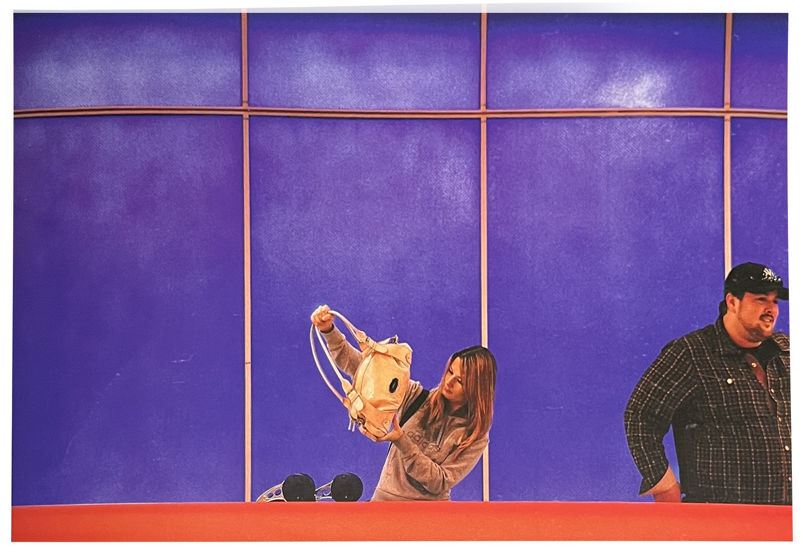
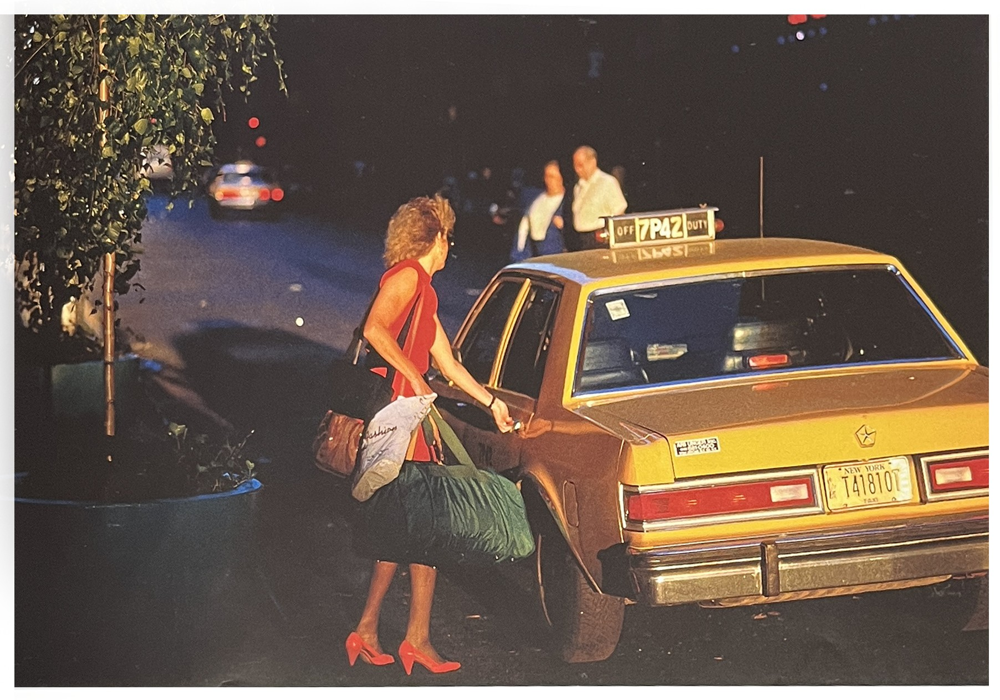
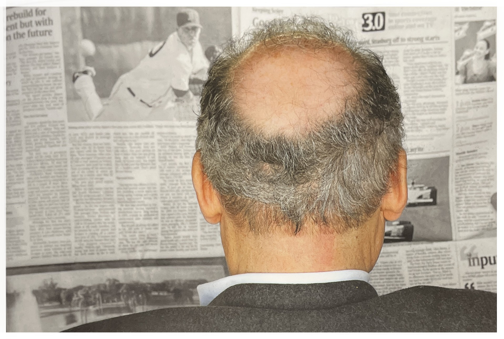
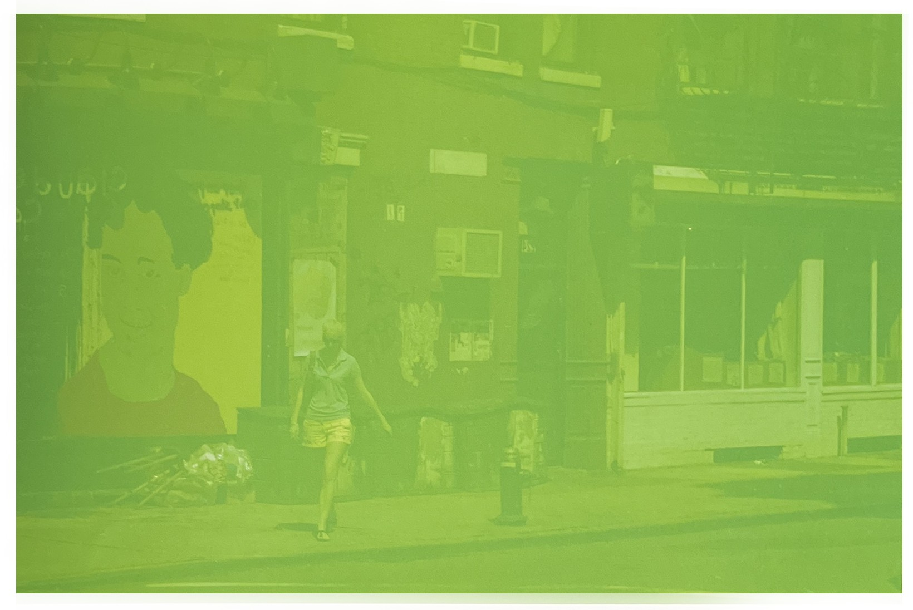

저 당시는 다섯 시산을 비행기에 앉아 있고도 정말 단 한 장의 원하는 이미지도 찾지 못했던 흔치 않은 경험을 한 직후였다.
아무 생각없이 짐을 찾으려 가는 길에 이 사진을 얻게 되었다.
이미지는 당신이 기대하는 장소뿐 아니라 어디든 있다는 사실을 인식하는 것이 중요하다.
어떤 일이 일어났을 때만 반짝 눈을 떠서는 안 된다. 늘 열려있어야 한다. 그러면 그때, 무엇이든 사진 찍는 일이 생기기 마련이다.
수화물 찾는 곳
뭔가 새로운 것[1]태양이 뉘엿뉘엿 넘어가고, 그 빛은 믿을 수 없이 황홀해 보였다. 예상대로 빛은 놀랍도록 좋았지만, 그 빛은 딱히 어떤 것을 강조하거나 바꿔놓고 있지는 않았다. 그렇게 내가 멍하니 기다리고 있는데 사진 속 여자가 갑자기 나타나서 택시를 잡으로 하기 시작했다.
한참 택시가 보이지 않다가 마침내 한 대가 그녀 앞에 멈춰섰다. 그녀는 문쪽으로 걸어 갔고 나는 정말 깜짝놀랐다. 어떻게 빛이 이 빽빽한 도시를 관통해서 이렇게 낮은 곳까지 왔으며, 6번 도로와 허드슨 강 사이에 있는 모든 건물을 깔끔하게 정리하고, 그녀의 빨간 구두와 타이어의 가장 아래까지 비출 수 있을 정도로 낮게 내려욌을까? 게다가 운좋게도 나는 배경에 길을 건너고 있는 커플을 담을 수 있었다. 그리고 또 하나의 행운은 배경에 있던 자동차가 브레이크를 밟으면서 그 등이 사진 속 여자의 신발과 함께 멋진 포인트로 작용할 수 있었다는 점이다.
이 사진을 찍고 나는 기쁨에 한껏 상기되어 있었지만 그 이유는 잘 알지 못했다. 나중에야 알게 된 것이지만 그 사진에의 빛과 색의 배치는 그전에는 본적이 없는 것이었고 볼수록 더 멋스럽게 느껴졌다.
사진이 가져다 주는 돈과 명예는 달콤하다. 하지만 새롭고 신선한 것을 보는 즐거움과 비교하면 그것은 아무것도 아니다.
여자, 구두, 택시
흑과 백 그리고 색[1]나는 터미널에서 사진 찍는 것을 좋아해서 가끔 비행기로 이동해야 할 때 발생하는 항공기 연착을 전혀 문제 삼지 않는다. 그날도 역시 일고여덟 명의 사람들이 각자의 컴퓨터로 동영상을 보고 있는 모습을 사진에 담았다.
다른 몇몇 무리들도 찍은 뒤, 어깨 너머로 우연히 신문을 읽고 있는 이 남자를 보게 되었다.
나는 되도록 은밀하지 않게 하려, 항상 즐겁게, 웃는 얼굴로, 겁주지 않는 몸짓과 행동을 취하려 노력한다.ㅍ
예루살렘에서 올 컬러 책을 출간한 적이 있는데, 편집자는 내가 극단적 정통파 유대교처럼 흑백으로 사진찍기를 원했다. "그들이 모두 검은색과 흔색 옷을 입기 때문이에요"하고 그는 말했었다. 그러나 나는 이 한 면만은 반드시 컬러로 해야 한다고 외쳤다. 하지만 나는 지고 말았다.
내가 이 사진을 정말 좋아하는 이유는 그 남자의 피부색을 제외하면 모든 것들이 흑백으로 되어 있기 때문이다. 왜인지는 모르겠지만 그 점이 나를 만족시켰다 그것은 그저 뒷통수와 신문일 수도 있지만. 특이한 흑백과 유색의 조화로서 나를 매료시켰다.
뒤통수
정해진 룰은 없다[1]영화'보이스 타운'Boys Town에서 스펜스 트레이시Spencer Tracy가 완벽히 재현한 플래너건Edward Jpseph Flanagan신부는 '나쁜 아이'라는 것은 없다고 믿었다. 단정 지을 수는 없지만 나 역시 나쁜 색이라는 것은 없다고 말한다. 그것은 순전히 주관적인 것이며, 내용 또는 다른 색과의 관계와 연관되는 것이다.
이 사진에는 '잘못된' 부분이 너무 많다.
옅은 초록색으로 뒤덮여 있고, 상像은 대비가 너무 흐릿하다. 게다가 디테일에는 명료함이 거의 없다. 색이 전체 배경의 질을 좌지우지할 정도로 매우 압도적이다. 이렇다 할 포인트나 절정, 내용 같은 것이 아무것도 없다.
이것은 정말 어려운 사진이라 할 수 있다. 당신은 여기에서 그 세세한 디테일을 찾아야 한다. 또 이것은 몹쓸 녹색필터를 통해 찍힌 사진처럼 보인다.
그러나 나는 이 사진이 좋다.
초록색 반영
[참고문헌]
[1]빛, 제스처, 그리고 색light, gesture & color, 제이 마이젤 지음, 박윤혜 옮김, 시그마북스, 2015.3.2
....
....
....
....
....